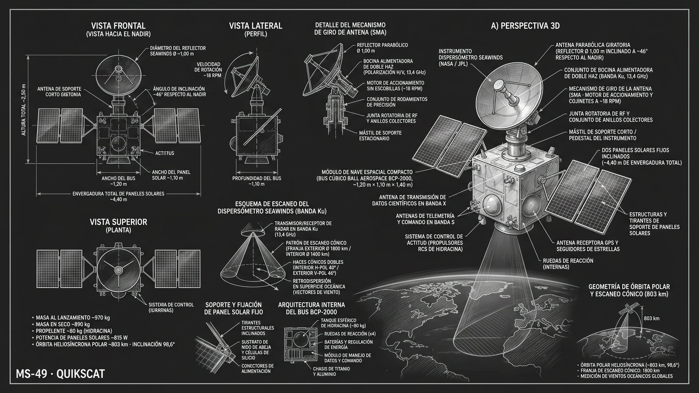

QuikSCAT

Fue una misión de recuperación rápida lanzada el 19 de junio de 1999 para paliar la pérdida de NSCAT, con el dispersómetro SeaWinds a bordo. Diseñado para dos o tres años, midió el viento en superficie de más del 90 % del océano libre de hielo cada día durante una década y luego sirvió nueve años más como referencia de calibración.
El 23 de noviembre de 2009 su antena giratoria se detuvo a 0 rpm y dejó de poder resolver vectores de viento; el instrumento siguió encendido y se usó como patrón de calibración hasta que fue apagado el 2 de octubre de 2018 conforme a su plan de fin de misión. El satélite permanece inoperativo en órbita. Personas: Michael Freilich, Ernesto Rodríguez, Rob Gaston
Lo que hizo
- Una década midiendo el viento del océano — Desde el 19 de julio de 1999 el dispersómetro SeaWinds, a 13,4 GHz, barrió cada día una franja de 1.800 km y cubrió más del 90 % de la superficie terrestre, con unas 400.000 mediciones diarias que mejoraron los pronósticos y permitieron detectar huracanes en mar abierto.
- De observador a patrón de calibración — Al secarse el lubricante de los cojinetes a finales de 2009 la antena apuntó hacia abajo y su franja se redujo a unos 30 km, pero la estabilidad de esa medida lo convirtió en el patrón de referencia con el que la ESA y la ISRO calibraron sus dispersómetros; el instrumento se apagó el 2 de octubre de 2018.
Modelo 3D, chat y cómic, en tres idiomas
Fuentes
- podaac.jpl.nasa.gov/QuikSCAT
- www.jpl.nasa.gov/news/after-two-long-careers-quikscat-rings-down-the-curtain/
- nssdc.gsfc.nasa.gov/nmc/spacecraft/display.action?id=1999-034A
Ver el índice completo · Proyecto del NASA Space Apps Challenge 2026. Contenido con fuentes citadas.